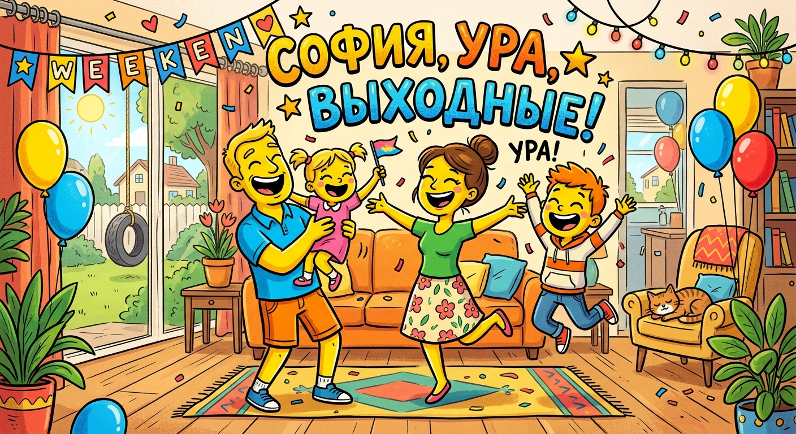

⚡
Открывающий удар
Соф! Хватит жрать дошираки! Дом — твоя студенческая халява! Настя борщ варит, Лёша котлеты жарит, а ты сидишь в общаге и голодаешь!
Не просто страница. Манифест. Для Софы, которой семнадцать, у которой первый курс, и у которой есть дом, где ждут Настя, Лёша, Ева и Шинджу.

Выходной —
не дырка
между буднями.
Выходной — сцена.
И Софа должна быть в кадре.
Первый курс — шумит. Город — ест силы. Поэтому особенно важно приезжать туда, где тебя любят без условий и кормят без счёта.
Соф! Хватит жрать дошираки! Дом — твоя студенческая халява! Настя борщ варит, Лёша котлеты жарит, а ты сидишь в общаге и голодаешь!
Выходные — не для Netflix'а и слёз! Ева соскучилась, Шинджу хвостом метёт, мама пирожки лепит специально для тебя, а отчим уже стол накрывает!
Студент! Считай экономию: завтрак — 300 рублей, обед — 500, ужин — 400! За выходные сэкономишь 1200 рублей — почти стипендия!
Дом — это не место, где спишь, дом — где Настя обнимает так крепко, что все проблемы первого курса растворяются в материнских объятиях!
Собирай рюкзак прямо сейчас! Электричка в 18:40 довезёт до счастья! Шинджу уже у двери сидит и ждёт твоих шагов по лестнице!
Соф, ты — не просто студентка, ты — дочь, сестра, часть семьи! Дом без тебя — как борщ без сметаны: вроде съедобно, но чего-то не хватает!
Да, это надо проговорить отдельно: можно приехать бесплатно и поесть у родителей. Для студента первого курса это не мелочь. Это подарок вселенной.
Можно тащить взрослую жизнь и всё равно иметь точку, где не надо никому ничего доказывать.
Настя, Лёша, Ева, Шинджу и Софа — это уже не просто семья. Это система, которая красиво работает в полном комплекте.
Софа —
не гость.
Софа — важная часть сюжета.
Настя уже третий раз за день спрашивает: «А Софка когда приедет?» Лёша молчит, но холодильник набивает твоими любимыми вкусностями!
Софа, приезжай к Насте, Лёше, Еве и Шинджу почаще. Потому что это и тепло, и еда, и семья, и отдых, и то самое чувство дома, которое никакой общагой не заменишь.